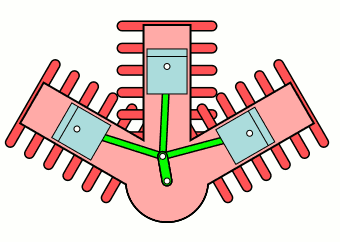
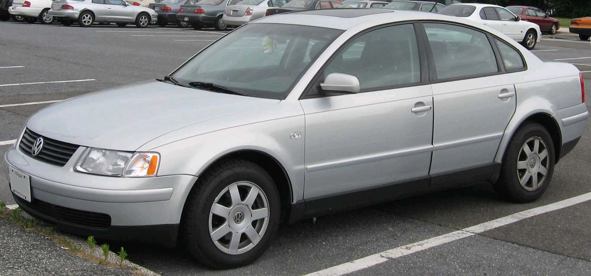
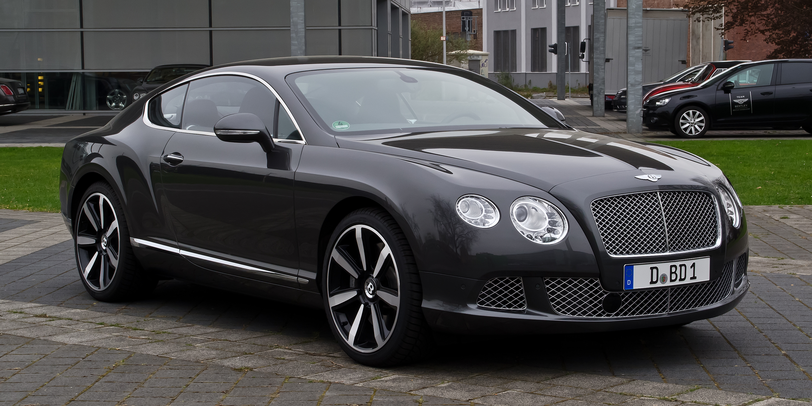
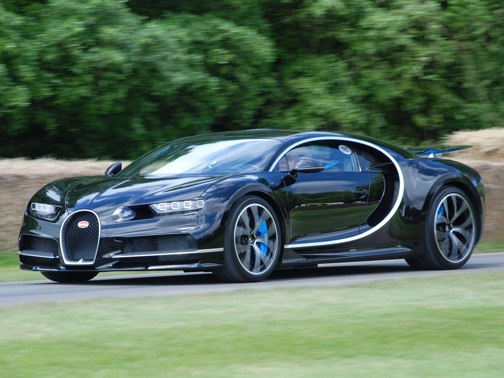
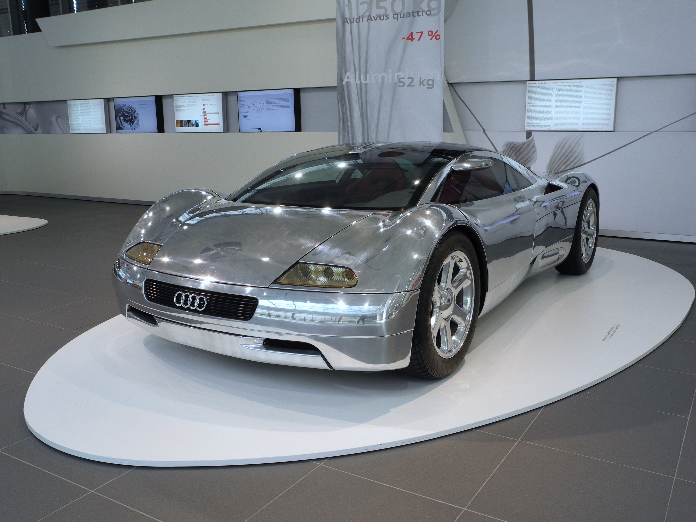

HISTOIRE DU MOTEUR EN W :
Le moteur en W est une architecture rare de moteur à combustion interne, apparue au début du XXᵉ siècle, d’abord dans l’aviation, où des moteurs comme le Napier Lion (1917) ont été utilisés pour leur compacité et leur puissance. Il s’agit d’un moteur à plusieurs rangées de cylindres inclinées, formant visuellement un « W ». Longtemps resté surtout expérimental ou réservé à des applications spécifiques, il a été remis au goût du jour dans les années 1990 par le groupe Volkswagen, notamment pour des modèles haut de gamme alliant puissance extrême et format compact.

FONCTIONNEMENT DU MOTEUR EN W :
Le moteur en W fonctionne selon le même principe qu'un moteur à combustion interne classique,
mais sa particularité réside dans son architecture : les cylindres sont disposés en trois ou quatre rangées inclinées,
se partageant un même vilebrequin.
Chaque cylindre reçoit un mélange air-carburant qui est enflammé par une bougie (dans le cas d’un moteur essence)
ou par compression (dans celui d’un diesel).
L'explosion repousse un piston vers le bas, transmettant la force à une bielle,
puis au vilebrequin, qui convertit ce mouvement linéaire en rotation pour faire tourner les roues du véhicule.
Grâce à cette disposition unique, un moteur en W peut loger plus de cylindres dans un espace réduit,
permettant d'obtenir une puissance élevée,
tout en réduisant la longueur du moteur par rapport à un V12 ou V16 classique.
En revanche, sa construction est plus complexe,
tant au niveau de la distribution (soupapes, arbres à cames) que du refroidissement et de l’alimentation,
ce qui explique son usage limité à des véhicules de très haute performance.

DES VOITURES A MOTEUR EN W :
| Volkswagen Passat W8 | Bentley Continental GT | Bugatti Chiron | Audi Avus Quattro |
|---|---|---|---|
| 2001 - 2004 | 2002 - 2017 | 2016 - 2024 | 1991 |
 |
 |
 |
 |